Sono Tarik El Moutaouakil — architetto di AI industriale e
fluidodinamica computazionale. Unisco digital twin physics-driven, machine learning e
automazione OT/IT per trasformare la fisica complessa in sistemi che restano in linea,
misurabili e pronti per la produzione.
Sistemi, non modelli. I modelli impressionano. I sistemi sopravvivono in produzione.
Consegno pipeline CFD-AI certificate e gemelli digitali che funzionano in produzione, non solo in demo. Inferenza in millisecondi al posto di ore di calcolo, validazione rigorosa contro solver full-fidelity, e un'architettura local-first che mantiene i dati dentro l'azienda. Ogni rilascio è testato, versionato e documentato.
Production-grade AI
Dalla demo al deploy — e ci resta
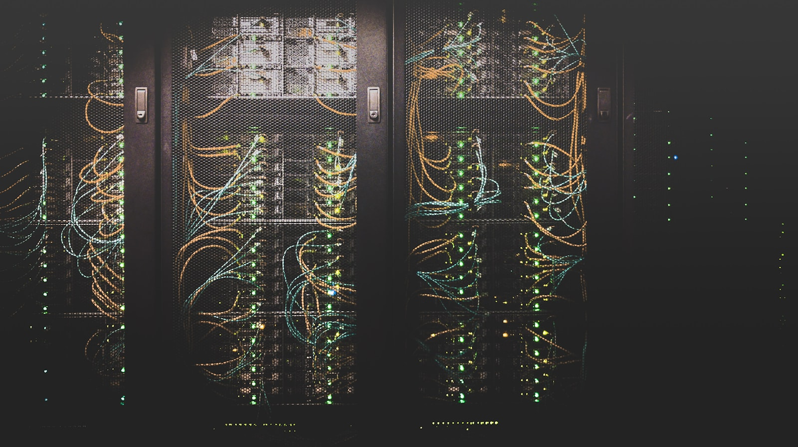
0
Solver CFD di proprietà
0+
Test automatici passing
0
Piattaforme in produzione
0+
Ore formazione EQF 6
01 — Profilo
L'architetto che traduce fisica complessa in sistemi certi
Dalla fisica alla produzione: digital twin, machine learning industriale e automazione OT/IT in un'unica architettura coerente.
Ingegnere AI industriale, architetto di sistemi e software house.
Con 1.700+ ore di formazione certificata EQF 6 (tra CNAFOER Reggio Emilia e altri enti: automazione, robotica, machine learning industriale e cyber security OT), progetto digital twin physics-driven, soluzioni Edge AI e piattaforme AI-native per contesti produttivi reali.
Sul banco di lavoro ho costruito CFDML, una piattaforma CFD-AI con 52+ solver di proprietà che coprono i regimi principali — compressibili e incomprimibili, multifase, turbolenti, termici e reattivi — affiancati da neural operator (FNO/DeepONet) e PINN. I surrogate raggiungono R² > 0.999 su casi validati, con inferenza in millisecondi e retraining incrementale. Intorno al cuore fisico ho assemblato gemelli digitali real-time, bridge OT/IT (MQTT, OPC-UA), viewer 3D e un layer operativo con scheduling, tracciamento delle esecuzioni e stima dei costi.
Parallelamente gestisco una software house AI-native con playbook SDLC/CI/CD/MLOps, knowledge graph Graphify, Hybrid RAG (LanceDB + BM25), orchestrazione multi-agente (OpenClaw, Hermes), quality gate automatici, SRE/Observability e FinOps. Il tutto con un approccio local-first e sovrano: LLM on-premise, dati in azienda, indipendenza dai vendor.
Python e PyTorch, neural operator, dashboard, manutenzione predittiva e process analytics. LLM locale (Ollama) e GraphRAG per mantenere la conoscenza operativa tra una sessione e l'altra.
Valore unico
Traduzione OT → IT
Chiudo il gap tra produzione fisica e intelligenza digitale: meno silos, più OEE, gemelli digitali usabili sia in sala controllo sia in linea. Consegno codice testato e versionato, con quality gate automatici.
Local-first
Dati sovrani, in azienda
Architettura local-first: LLM e RAG on-premise, nessun invio di dati a terzi, allineata alle direttive europee su dati e AI. La conoscenza resta proprietà dell'azienda.
02 — Expertise
Sei aree, una sola catena dal sensore alla decisione
Sei areeAI · Digital Twin · OT/IT
Digital twin, machine learning industriale, automazione OT e sistemi agentic tenuti insieme dalla stessa architettura, dalla fisica alla produzione.
Digital Twin & CFD-AI
Gemelli digitali physics-informed che sostituiscono ore di HPC con inferenza in millisecondi.
OpenFOAM · PINNs · FNO / DeepONet
ROM POD/DMD/Koopman R² > 0.999
Latenza inferenza < 10 ms · retraining incrementale
Industrial ML & Edge AI
Modelli predittivi e anomaly detection che girano su GPU edge in linea, non solo in cloud.
Predictive maintenance · RUL · Health index
Time series · Computer vision · Tabular
Deploy edge / GPU locale (Jetson, edge x86)
Automazione & Robotica
Celle robotizzate, PLC e collaudi funzionali con mindset system-integrator.
PLC Ladder / FBD / STL · TIA Portal
Robot antropomorfi & cobot (KUKA/ABB/FANUC)
Diagnosi · Taratura · Collaudo funzionale
IIoT & Reti Industriali
Connessione sicura macchina-edge-cloud con protocolli industriali e segmentazione OT.
MQTT · OPC-UA · Modbus TCP
Profinet · EtherCAT · TSN
Cyber security OT / ISA 62443
CAD 3D & Meccanica
Feature parametriche, geometria per auto-mesh CFD ed export STEP/STL/GLB pronti per produzione.
Onshape parametric CAD · Assemblaggi top/down
GLB · STL · DXF · STEP · BOM
Geometria per auto-mesh CFD
Sistemi Agentic & RAG
Agenti specializzati, knowledge graph e RAG ibrido per delivery tecnica governabile.
Sicurezza by design per OT e IT: threat modeling, segmentazione ISA-62443 e vault crittografico.
IEC 62443 · NIST CSF · ISA/IEC zones & conduits
Threat modeling · Vulnerability management
Vault AES-256 · Supply chain security
SRE & Observability
SLO, error budget e telemetria distribuita per tenere i sistemi in piedi sotto carico.
SLO/SLI · Error budget · Postmortem
OpenTelemetry · Prometheus · Grafana
Runbook · Incident response · On-call
QA, Test & DevOps
Quality gate, test end-to-end e pipeline CI/CD che rendono ogni deploy ripetibile e sicuro.
Test plan · Regression · E2E · Coverage gate
CI/CD · GitHub Actions · Docker · K8s
UI/UX Design System · Accessibility · Responsive
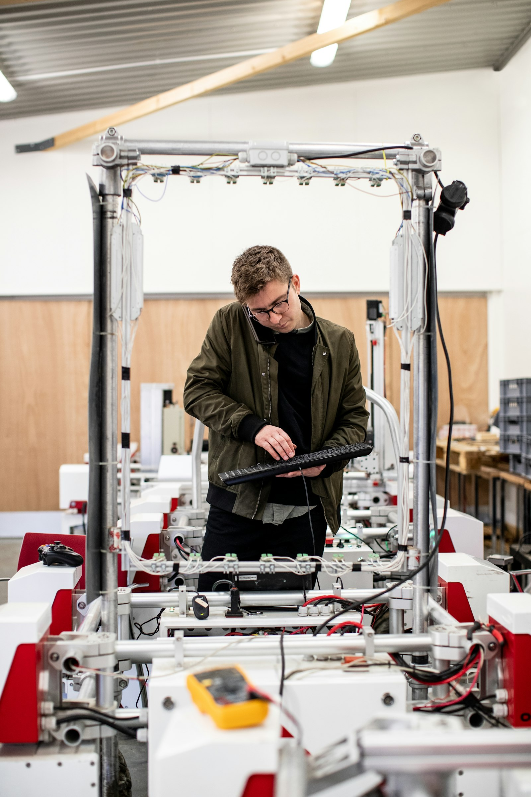
Operational Technology → Information Technology
Dalla fisica sul campo alla decisione in sala controllo
PLC, robotica e SCADA parlano la stessa lingua di modelli ML e gemelli digitali: un'unica catena coerente che trasforma dati fisici in decisioni produttive misurabili, senza silos.
03 — Selected work
Piattaforme costruite sul banco di lavoro
Sistemi rifiniti nel tempo, non dimostrativi: codice testato e versionato, con metriche prese dall'effettivo funzionamento.
01 / FLAGSHIPIn sviluppo · v13
CFDML — Piattaforma CFD-AI
Ambiente per la prototipazione CFD accelerata dal machine learning. Cuore fisico con 52+ solver di proprietà sui regimi principali — compressibili e incomprimibili, multifase, turbolenti, termici e reattivi — affiancati da neural operator (FNO/DeepONet), PINN e automazione OpenFOAM. I surrogate arrivano a R² > 0.999 su casi validati, con inferenza in millisecondi invece di ore di CFD full-fidelity. Layer operativo con LLM locale (Ollama) e Hybrid RAG (LanceDB + BM25) per interrogare i casi in linguaggio naturale.
Layer real-time sopra i solver: ROM POD/DMD/Koopman per proiettare le simulazioni sul bordo, retraining incrementale, auto-mesh, ottimizzazione Bayesian (GP-EI) e quantificazione incertezza (GUM/Monte Carlo). Integrazione di campo tramite bridge MQTT e OPC-UA, viewer 3D (Three.js), export Excel multi-foglio e un Operations Pack con scheduler, lineage delle esecuzioni e stima dei costi (tempo / USD / CO₂eq). Template industriali pronti: edificio HVAC, parco eolico, processo continuo.
ROM POD · DMD · KoopmanBridge MQTT · OPC-UA3 template industriali
WebGLROMGP-EIGUMMQTTThree.jsOPC-UAExcel
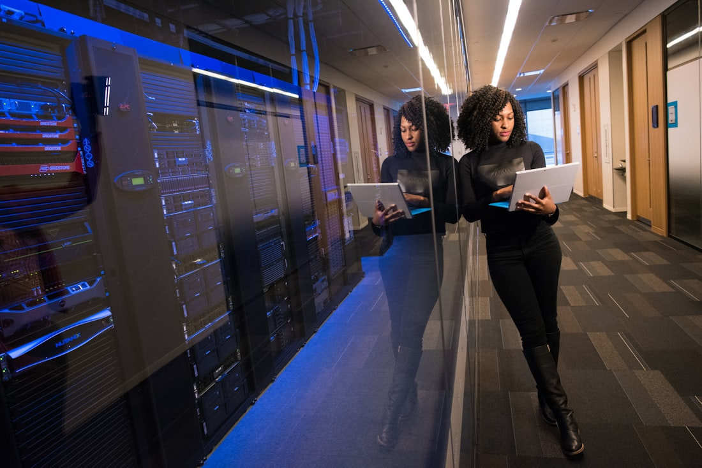
03 / AGENTIC OSLocale · air-gapped
Nexus Omega — OS Agentic Sovrano
Stack agentic locale e air-gapped per l'engineering meccatronico. GraphRAG su knowledge base proprietaria, fine-tuning QDoRA 4-bit on-premise, verifica formale Z3 su vincoli critici e text-to-CAD con build123d (STEP generati da codice). Omni-router MCP con un unico cervello e semaforo hardware, multi-provider LLM via LiteLLM (Ollama, OpenRouter, GLM) e fallback automatico. Vault AES-256 per i segreti e sandbox Docker per il codice generato dagli agenti.
Piattaforma di orchestrazione multi-agente con memoria a tre livelli (episodica, semantica, procedurale), registry dello swarm e knowledge graph Graphify come memoria condivisa. Hermes gestisce il routing multi-provider (Ollama locale, OpenRouter, GLM) scegliendo il modello in base al task, con fallback automatico e API unificata. Più ruoli agentici — architect, DevOps, scout long-context, operative — coordinati su DAG con quality gate.
Business intelligence AI-first per il retail fashion: forecast della domanda, pricing dinamico (Deep RL), analisi del sentiment e connettori POS (Shopify / WooCommerce) via FastAPI, con coda resiliente Kafka/Redis per gestire i picchi.
FastAPIKafkaRedisDeep RLTime series
06 / SECOND BRAINLive
Software House OS — Memoria operativa multi-agente
Sistema operativo per la delivery AI-native: playbook professionali (kickoff, SDLC, code review, CI/CD, secure SDLC, SRE, MLOps, incident response), skill matrix e quality gate di progetto. Memoria condivisa tra più agenti su knowledge graph Graphify e Hybrid RAG LanceDB (BM25 + vettoriale), dashboard DORA metrics e backlog di miglioramento continuo prioritizzato. È il layer che rende il lavoro di una software house AI-native ripetibile e misurabile.
Suite ingegneristica per motori elettrici: CAD parametrico IEC/NEMA, advisor PINN fisico, mappa efficienza MTPA/MTPV e report esportabili. Integrazione con PLEXIM RT Box per HIL e validazione real-time.
PyTorchPINNFreeCADSTEPSTLThree.jsFastAPI
08 / KNOWLEDGEAttivo
Deep Knowledge Patterns
Knowledge graph e memoria compressa per evitare di rileggere codebase enormi. Scopre dipendenze nascoste, comunità semantiche e pattern riutilizzabili tra i progetti.
GraphifyLanceDBRAGPython
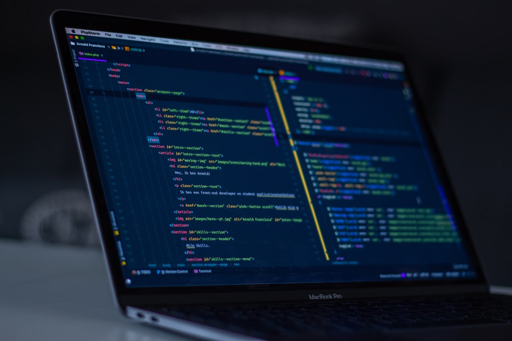
09 / LLMAttivo
CFDBrain LLM
Motore di ragionamento LLM locale per CFDML, con RAG enrichment su ChromaDB e fallback a logica physics-based quando Ollama è offline. Endpoint per query, analisi e raccomandazioni training.
OllamaChromaDBRAGFastAPI
04 — Labs
Strumenti collaterali di spessore
Moduli e piattaforme minori che dimostrano versatilità commerciale e completano l'ecosistema AI-native.
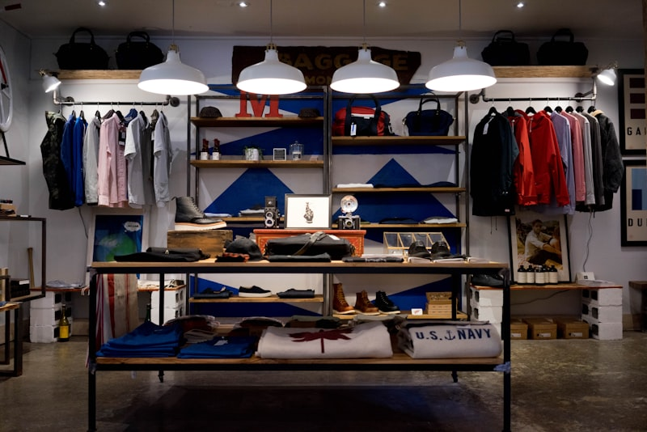
RETAIL AI
FashionIntel OS
Business intelligence AI-first per il retail fashion: forecast della domanda, pricing dinamico con Deep RL, analisi sentiment e connettori POS (Shopify/WooCommerce).
FastAPIKafkaRedisDeep RL
PDF & RAG
PDFCraft Toolkit
Toolkit privacy-first per estrazione, chunking semantico e RAG su documenti PDF. Nessun dato lascia la macchina locale.
PythonRAGLanceDBDocker
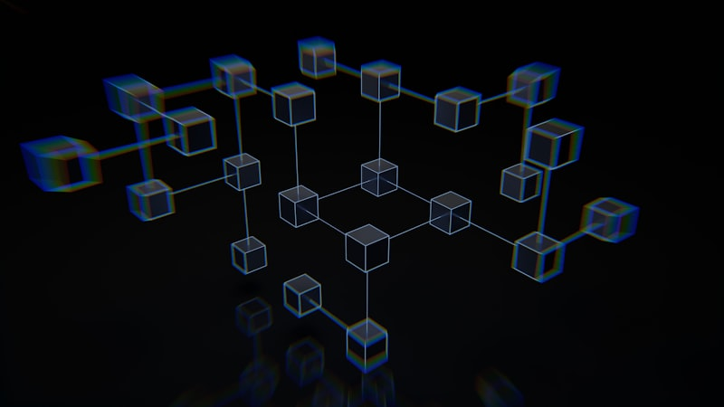
AGENTS
Agent Reach
CLI e libreria Python che danno agli agenti la capacità di leggere e cercare su 13 piattaforme internet senza API a pagamento.
MCPPythonPowerShell
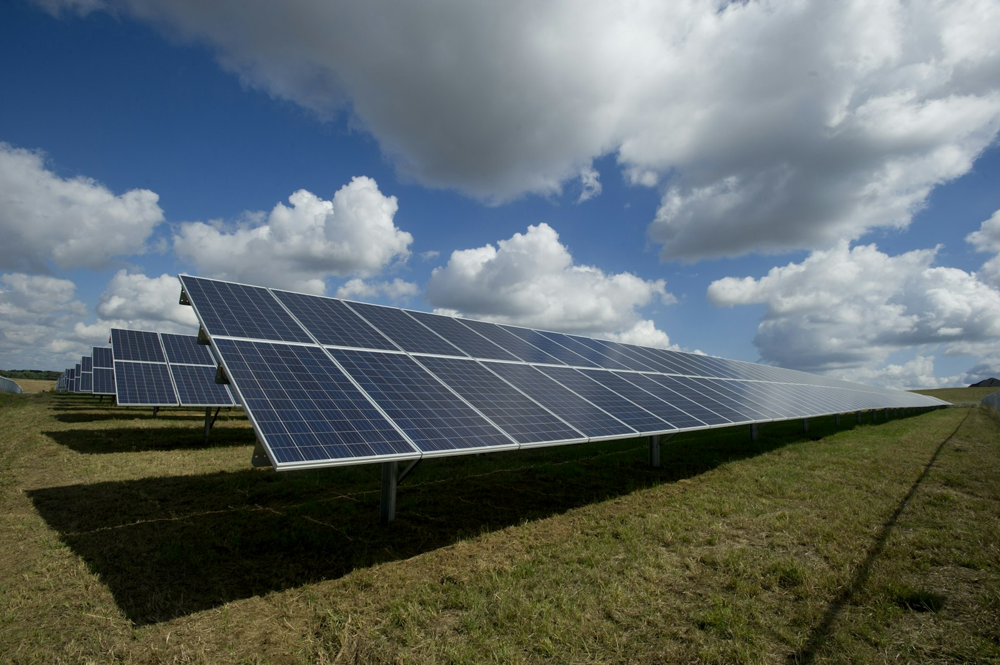
+3.2%Digital twin di un parco eolico: surrogate per potenza e pitch real-time, modello di scia Jensen e ottimizzazione Bayesian per massimizzare la produzione annua.
05 — Proof
Risultati misurabili, non claim
Validazione surrogate, ottimizzazione, quantificazione dell'incertezza e verifica dei solver: i numeri vengono dall'effettivo funzionamento sul banco di lavoro.
CASE 01
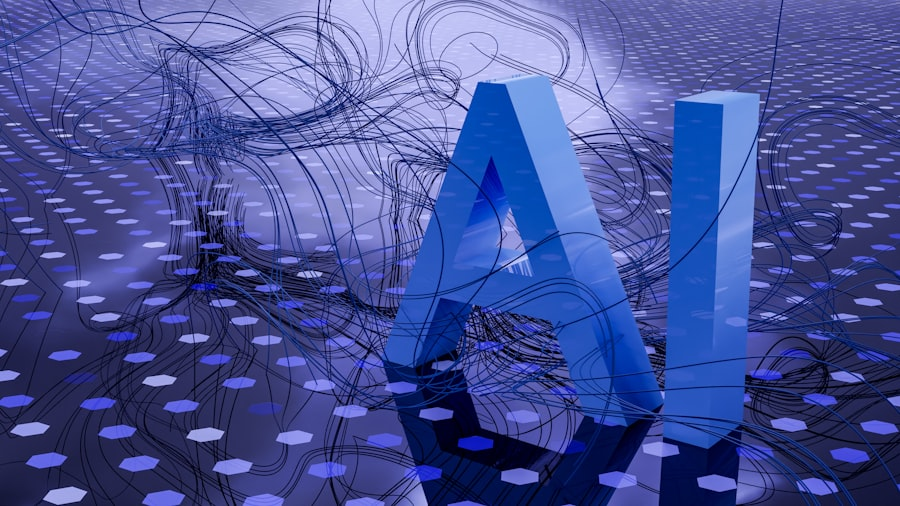
Aerodinamica · Surrogate ML
Ottimizzazione NACA0012
Surrogate MLP su Cl e Cd addestrato su 11 run CFD full-fidelity, con polari aerodinamiche riproducibili a seed fisso. Validazione contro XFOIL come oracle.
Cl R² = 0.9997 · Cd R² = 0.9903 · 11× più veloce del CFD
CASE 02
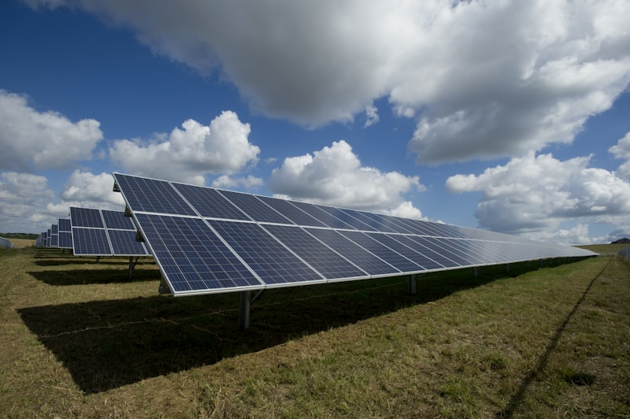
Energia · Maintenance
Scambiatore — manutenzione predittiva
Surrogate per efficienza termica e finestra di manutenzione su asset energetico, con retraining incrementale via ROM POD appena arrivano nuovi dati di campo.
R² = 0.9995 · Retrain POD < 100 ms
CASE 03
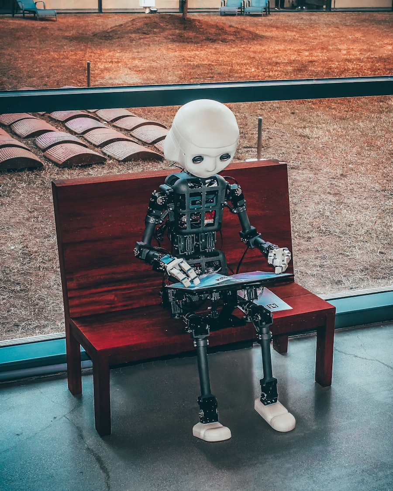
Fluidi · Neural ODE
Cavità 2D multi-Re
Neural ODE su 7 regimi di Reynolds (100–10000), errore medio sotto l'1% rispetto al CFD ad alta fedeltà. Pronto per il controllo di forma via ottimizzazione adjoint.
Errore < 1% · 7 regimi di Reynolds
CASE 04
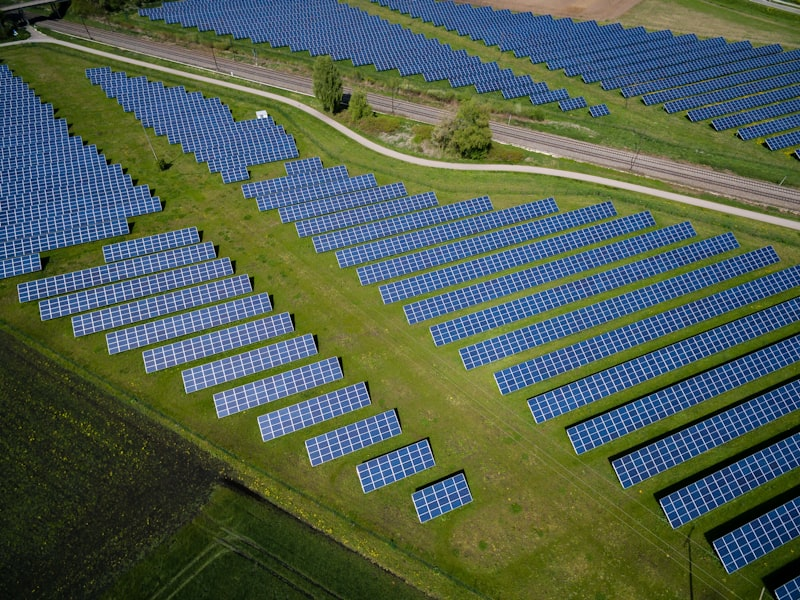
Energy · Digital Twin
Parco eolico — Digital Twin
Surrogate per potenza e pitch real-time su 6 turbine, con modello di scia Jensen e ottimizzazione Bayesian (GP-EI) per massimizzare la produzione annua.
R² = 0.9989 · AEP ottimizzato +3.2%
CASE 05
Design · Bayesian Opt
Ottimizzazione di forma
GP-EI multi-fedeltà su profili NACA 4-digit: 15 valutazioni del surrogate contro oltre 200 run CFD, con convergenza al punto ottimo entro l'1%.
15 evals · errore su x* < 0.7%
CASE 06
Solver · MMS Verification
MMS — gold standard
Method of Manufactured Solutions per verificare l'ordine di convergenza dei solver: Poisson 2D e Heat 1D restituiscono l'ordine teorico atteso, confermando la correttezza dell'implementazione.
Ordine ~2.0 (atteso 2.0) · verifica rigorosa
06 — Stack
Competenze operative, dal sensore al modello
CertificatoEQF 6 · 1700+ ore
Stack ibrido OT/IT costruito su 1.700+ ore di formazione certificata EQF 6 e su progetti di produzione reali.
Percorso intensivo, certificato e orientato all'industria reale.
Gen 2024 — Presente
Industrial AI Architect · Digital Twin Lead
Progetto indipendente — Banco Lavoro Professionale CFD/ML
Architetture AI per digital twin physics-driven, pipeline ML industriale, automazione CFD, bridge WSL-Windows e disaster recovery su dataset multi-TB. Founder di Nexus Omega Inc.
2025 — 2026 · In corso
Tecnico Automazione Industriale con ML, AI e Manutenzione Predittiva
Ente formativo · 800 ore (project work + stage 300h)
PLC-HMI, reti industriali, visione artificiale, robotica, pneumatica, azionamenti e innovazione d'impresa.
2024 — 2025
Progettazione 3D & Sistemi Robotizzati
PROJECT SRL / DISMI — Industria 5.0
Modellazione meccanica, cablaggi, protocolli, diagnosi e collaudo funzionale di impianti automatizzati.
2025
Certificazioni e specializzazioni
Robotica · CAD · Data · PLC
Programmazione robot antropomorfi (EQF 4, CEAR Brescia), Onshape Academy + Enterprise Release Workflows, Data Analyst Excel/Python (200h), Automazione e Domotica PLC (168h).
EQF 6 Cyber Security OTCNAFOER · ISA 62443
Robotica EQF 4CEAR Brescia · antropomorfi
Onshape EnterpriseCAD · Release Workflows
Data Analyst 200hExcel · Python · BI
08 — Process
Quattro fasi, un'unica catena di valore
Dal sensore sul campo al modello che decide: un metodo rifinito su 1.700+ ore di formazione e su progetti di produzione reali.
01
Sense · Campo
Misura e collega
Acquisizione dati reali via MQTT, OPC-UA, Profinet. Taratura, diagnosi e collaudo funzionale di macchine e celle robotizzate prima di scrivere una riga di ML.
02
Model · Fisica
Costruisci il gemello
OpenFOAM + PINN + neural operator fino a R² > 0.999. Validazione MMS e oracle XFOIL. Il modello parla la lingua della fisica, non solo dei dati.
03
Deploy · Edge
Metti in produzione
Inferenza sub-10ms su Jetson o edge x86, bridge OT↔IT, viewer 3D live e Operations Pack con scheduler, lineage e stima costi in tempo / USD / CO₂eq.
04
Loop · Migliora
Retrain e osserva
ROM con retraining incrementale < 100ms, Bayesian GP-EI per l'ottimizzazione, UQ con GUM/Monte Carlo e DORA metrics per misurare la delivery stessa.
09 — Lab
Esperimenti che nutrono le piattaforme
Scratch profondi tenuti vivi sul banco di lavoro: ognuno è il seme di un modulo production-ready.
CFD · PINN
Lid-driven cavity — reinforcement PINN
PINN con curriculum sul numero di Reynolds: stabile da Re 100 a Re 10000, con loss physics-driven e boundary conditioning soft.
FNODeepXDEPyTorch
Agentic · CAD
Text-to-STEP con build123d
Prompt naturale → codice build123d → file STEP esportabile. Verifica geometrica e Z3 sui vincoli dimensionali prima del release.
build123dZ3STEPOllama
RAG · Knowledge
Hybrid RAG su vault meccatronico
Graphify knowledge graph + LanceDB ibrido (BM25 + vettoriale) su 17.5K nodi wiki: query in linguaggio naturale su codice, progetti e manuali.
GraphifyLanceDBBM25MCP
OT · Cyber
OT honeypot su ISA 62443
Segmentazione di rete, monitoring Modbus/OPC-UA e detection anomalie su traffico OT. Demonstrator di cyber security OT formato laboratorio.
ISA 62443ModbusSuricata
RL · Control
Controllo RL di un drone CFD-aware
PPO su ambiente con surrogate CFD come dynamics: training offline, deploy leggero, validazione contro solver ad alta fedeltà.
PPOStable-Baselines3WebGL
Vision · Inspection
Defect detection GPU edge
YOLO distillato su Jetson Orin per ispezione visiva in linea, con quantizzazione INT8 e active learning su scarti rari.
Sistemi, non modelli. Local-first. Fisica prima dei parametri. Ciò che lascio in azienda resta proprietà dell'azienda.
01 — Production-first
Sistemi che sopravvivono in produzione
Un modello che impressiona in demo e cade in campo non vale. Consegno codice testato, versionato, con quality gate automatici e SLO misurabili. La produzione è la demo.
02 — Local-first
Dati sovrani, sempre in azienda
LLM e RAG on-premise, nessun invio a terzi, alignment alle direttive EU su dati e AI. La conoscenza operativa — processi, parametri, scarti — resta proprietà dell'azienda.
03 — Physics-driven
La fisica prima dei parametri
PINN, neural operator e ROM validati con MMS contro solver full-fidelity. I modelli rispettano conservazione, leggi di scala e regimi fisici — non sono curve interpolate.
04 — OT ↔ IT Bridge
Senza silos, dalla sala macchine al cloud
Parlo PLC Ladder e PyTorch con la stessa disinvoltura. Il valore unico è chiudere il gap: meno silos, più OEE, gemelli digitali usabili sia in sala controllo sia in linea.
05 — Verified
Verifica formale, non fiducia cieca
Z3 sui vincoli critici, MMS sull'ordine di convergenza dei solver, oracle XFOIL. Non dichiaro "funziona" finché i numeri non lo dimostrano con metodo ripetibile.
06 — Sovereign
Indipendenza tecnologica
Multi-provider LLM con fallback automatico, modelli on-premise QDoRA 4-bit, text-to-CAD generato da codice. L'azienda resta padrona della propria intelligenza, oggi e nel tempo.
07 — Business-driven
Valore misurabile prima del codice
Ogni prodotto parte da problema reale, cliente e metrica economica. Definisco ROI, costo stimato, criterio di successo e piano di verifica prima di scrivere la prima riga.
0Bug critici in produzione
0Dipendenze vendor lock-in
<10msInferenza surrogate CFD
100%Codice testato & versionato
11 — Software House
Delivery AI-native: codice che resta in produzione
Non vendiamo demo. Consegniamo sistemi testati, versionati, con quality gate automatici e SLO misurabili. La produzione è la demo.
Software House OS · NEXUS OMEGA
Sovranità tecnologica · Delivery misurabile · Valore economico reale
Abbiamo costruito NEXUS OMEGA — un sistema operativo per la delivery AI-native che trasforma ogni progetto in asset riutilizzabile.
Playbook professionali (kickoff, SDLC, code review, CI/CD, secure SDLC, SRE, MLOps, incident response),
Graphify knowledge graph (17.5K nodi, 2.1K community) come memoria condivisa tra agenti,
Hybrid RAG LanceDB (BM25 + vettoriale) su vault meccatronico,
DORA metrics live e backlog miglioramento continuo prioritizzato.
Multi-provider LLM con fallback automatico (Ollama locale, OpenRouter, GLM, NVIDIA NIM) — l'azienda non dipende da nessun vendor.
17.5KNodi knowledge graph
2.1KCommunity rilevate
597Chunk RAG ibrido
100%Sovrano · Air-gapped
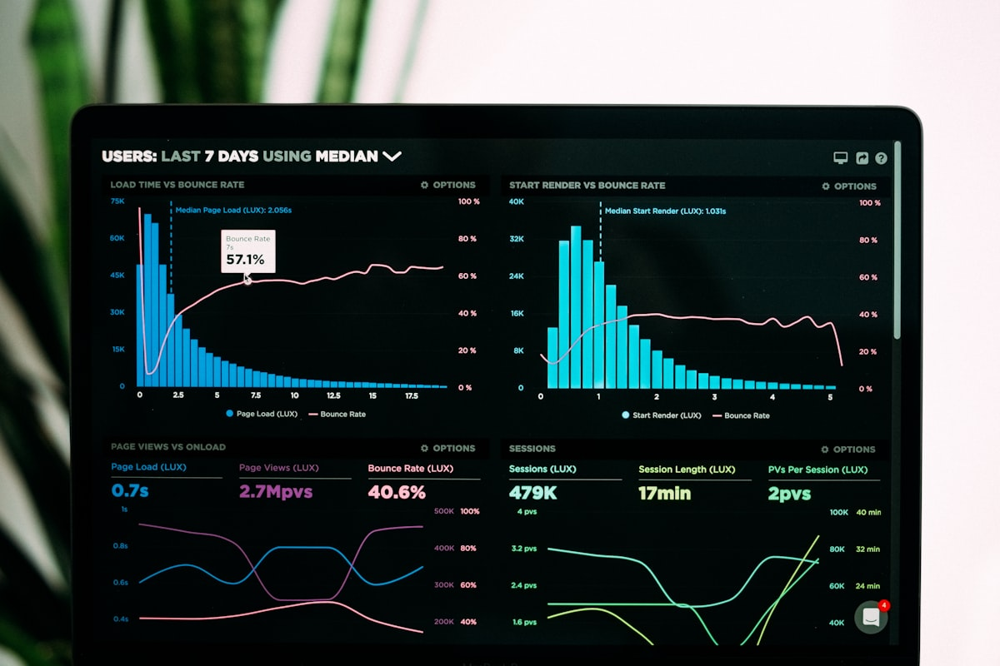
FLAGSHIP · v13 In sviluppoCFDMLPiattaforma CFD-AI
CFDML — Piattaforma CFD-AI completa
52+ solver di proprietà sui regimi principali (compressibili, incomprimibili, multifase, turbolenti, termici, reattivi) affiancati da neural operator (FNO/DeepONet), PINN e automazione OpenFOAM.
I surrogate arrivano a R² > 0.999 su casi validati, con inferenza in millisecondi invece di ore di CFD full-fidelity.
Layer operativo con LLM locale (Ollama) e Hybrid RAG (LanceDB + BM25) per interrogare i casi in linguaggio naturale.
Mercato · Valore
TAM CFD simulation >$3.2B (CAGR 9.8%). Sostituzione ore-HPC = risparmio 100-1000× per run. Target: OEM automotive, aerospace, energy, turbomachinery. Pricing per solver-seat/anno.
DIGITAL TWIN · PROD In produzioneTwin EngineOperations Pack
Digital Twin Engine — Operations Pack
Layer real-time sopra i solver: ROM POD/DMD/Koopman per proiettare le simulazioni sul bordo, retraining incrementale, auto-mesh, ottimizzazione Bayesian (GP-EI) e quantificazione incertezza (GUM/Monte Carlo).
Integrazione di campo tramite bridge MQTT e OPC-UA, viewer 3D (Three.js), export Excel multi-foglio e un Operations Pack con scheduler, lineage delle esecuzioni e stima costi (tempo / USD / CO₂eq).
Template industriali pronti: edificio HVAC, parco eolico, processo continuo.
Mercato · Valore
Digital Twin market >$48B (CAGR 35%). Time-to-value giorni vs mesi. Target: facility managers, energy operators, process industry. SaaS per asset + professional services.
WebGLROMGP-EIGUMMQTTThree.jsOPC-UAExcel
3 template · ROM <10ms · Live
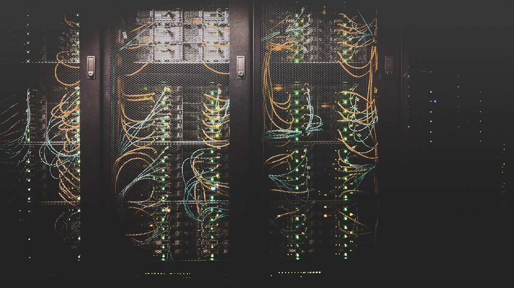
AGENTIC OS · AIR-GAPPED LocaleNexus ΩSovrano · Multi-agente
Nexus Omega — OS Agentic Sovrano
Stack agentic locale e air-gapped per l'engineering meccatronico.
GraphRAG su knowledge base proprietaria, fine-tuning QDoRA 4-bit on-premise,
verifica formale Z3 su vincoli critici e text-to-CAD con build123d (STEP generati da codice).
Omni-router MCP con un unico cervello e semaforo hardware,
multi-provider LLM via LiteLLM (Ollama, OpenRouter, GLM) e fallback automatico.
Vault AES-256 per i segreti e sandbox Docker per il codice generato dagli agenti.
Mercato · Valore
Enterprise AI agents >$50B (CAGR 45%). Zero vendor lock-in, data sovereignty EU-compliant. Target: R&D departments, defense, regulated industries. License per seat + support.
Piattaforma di orchestrazione multi-agente con memoria a tre livelli (episodica, semantica, procedurale), registry dello swarm e knowledge graph Graphify come memoria condivisa.
Hermes gestisce il routing multi-provider (Ollama locale, OpenRouter, GLM) scegliendo il modello in base al task, con fallback automatico e API unificata.
Più ruoli agentici — architect, DevOps, scout long-context, operative — coordinati su DAG con quality gate.
SAAS · RETAIL AI AttivoFashionIntelRetail BI AI-first
FashionIntel OS — Business Intelligence AI-first
Business intelligence AI-first per il retail fashion: forecast della domanda, pricing dinamico (Deep RL), analisi del sentiment e connettori POS (Shopify / WooCommerce) via FastAPI, con coda resiliente Kafka/Redis per gestire i picchi.
Software House OS — Memoria operativa multi-agente
Sistema operativo per la delivery AI-native: playbook professionali (kickoff, SDLC, code review, CI/CD, secure SDLC, SRE, MLOps, incident response), skill matrix e quality gate di progetto.
Memoria condivisa tra più agenti su knowledge graph Graphify e Hybrid RAG LanceDB (BM25 + vettoriale), dashboard DORA metrics e backlog di miglioramento continuo prioritizzato.
È il layer che rende il lavoro di una software house AI-native ripetibile e misurabile.
Non scrivo solo software: progetto sistemi. Ogni riga di codice è un pezzo di un asset industriale, testato, versionato e pronto a scalare.
Architetto del digitale, ingegnere prima che sviluppatore
Il mio lavoro non si riduce a "fare il programma". Parto dalla fisica del problema, passo attraverso l'architettura del sistema e arrivo al codice che gira in produzione. CFDML, RT Box Digital Twin, OpenClaw e Nexus Omega non sono semplici progetti: sono piattaforme costruite con un mindset di software house industriale.
Ogni sistema è modellato con quality gate automatici, test suite esaustive, documentazione viva e una roadmap di rilascio misurata su metriche DORA. Applico discipline come Software Engineering Professionale, Architecture Engineering, QA Test Engineering, SRE Observability, Security Engineering e MLOps Production per garantire che il codice non si rompa al primo deploy, ma migliori con il tempo.
Piattaforma CFD-AI con 52+ solver proprietari, neural operator FNO/DeepONet, PINN e agente LLM locale. Inferenza sotto i 10 ms per sostituire simulazioni che richiedevano ore.
75+ endpoint REST
OpenFOAM automation
Uncertainty quantification
RT Box Digital Twin
Suite ingegneristica completa per motori elettrici: CAD parametrico IEC/NEMA, advisor PINN fisico, mappa efficienza MTPA/MTPV e report ingegneristici esportabili.
CAD GLB / STL / DXF / STEP
Advisor PINN fisico
300+ test automatizzati
OpenClaw OMEGA
Fleet multi-agente con memoria a tre livelli, orchestrazione su DAG e 79+ skill installate. Software Engineering Agent che scrive, testa e deploya codice in autonomia.
Multi-provider LLM
Browser automation
Persistent memory
Nexus Omega OS
Sistema operativo AI-native per la delivery professionale: playbook SDLC/CI/CD/MLOps, knowledge graph Graphify, Hybrid RAG e metriche DORA in tempo reale.
GraphRAG + LanceDB
Quality gate automatici
FinOps & SLO
Valore e mercato
I sistemi che costruisco rispondono a un mercato globale in espansione: Digital Twin industriale, AI per la simulazione, automazione ingegneristica e piattaforme agentiche. Non si tratta di MVP da presentazione, ma di prodotti con un modello di business chiaro: licenze enterprise, consulenza specializzata e delivery di piattaforme chiavi in mano.
Il vantaggio competitivo è la profondità tecnica: un solo ingegnere con competenze trasversali in fisica, AI, software e automazione può sostituire team frammentati e ridurre i tempi di sviluppo di mesi.
Enterprise LicenseConsultingTurn-key Platform
52+
Solver CFD
300+
Test RT Box
75+
Endpoint REST
79+
Skill OpenClaw
Ambient Colta
14 — Business Impact
Non solo tecnologia: valore economico misurabile
Ogni piattaforma ha un modello di business chiaro, un mercato quantificato e metriche di ritorno sull'investimento. Perché la miglior AI industriale è quella che si paga da sola.
CFDML
100–1000× risparmio per run CFD
Sostituzione ore-HPC con inferenza in millisecondi. R² > 0.999 validato. Mercato CFD simulation $3.2B (CAGR 9.8%). Target: OEM automotive, aerospace, energy, turbomachinery. Modello: license per solver-seat/anno.
Risparmio100–1000×
TAM$3.2B
DIGITAL TWIN
Time-to-value: giorni, non mesi
Template industriali pronti (HVAC, eolico, processo continuo). Mercato Digital Twin $48B (CAGR 35%). Target: facility manager, energy operator, process industry. Modello: SaaS per asset + professional services.
AEP boost+3.2%
TAM$48B
AGENTIC OS
Zero vendor lock-in, dati sovrani
Stack agentic on-premise, multi-provider LLM con fallback automatico. Mercato Enterprise AI agents $50B (CAGR 45%). Target: R&D, difesa, industria regolata. Modello: license per seat + support.
Vendor lock-in0
TAM$50B
💎 Vantaggio competitivo unico
Token Economy Engineering & FinOps AI
Una delle capacità più rare nel panorama AI industriale: ottimizzazione continua del costo per token attraverso model routing intelligente, caching semantico, quantizzazione adattiva e budget guardrail automatici. Riduzione 40–70% dei costi operativi AI senza sacrificare qualità.
Model Router (Hermes)Semantic CacheQDoRA 4-bitToken Budget Auto-tuneMulti-provider FallbackCost Analytics Dashboard
FinOps AI · Real-time
40–70% riduzione costi AI operativi
🛡️ Trust & Compliance
AI Act ready. GDPR compliant by design. Dati sempre sovrani.
EU AI Act · Limited Risk
I nostri sistemi sono classificabili come "limited risk" sotto l'EU AI Act. Documentazione tecnica, trasparenza e supervisione umana integrate nell'architettura.
Local-first · Data Sovereignty
LLM e RAG on-premise, nessun invio a terzi. Architettura air-gapped disponibile. Allineamento a GDPR, direttive EU su dati e AI Act. La conoscenza resta in azienda.
IEC 62443 · OT Security
Segmentazione di rete, monitoring Modbus/OPC-UA, detection anomalie su traffico OT. Threat model e vulnerability management per infrastrutture critiche.
ISO 42001 · AI Management
Framework di gestione AI allineato a ISO/IEC 42001. Quality gate automatici, audit trail, evaluation dataset e continuous monitoring per ogni modello in produzione.
🇪🇺 EU AI Act ReadyISO/IEC 42001 AlignedGDPR CompliantNIST AI RMFIEC 62443 OTAES-256 Vault
13 — Contact
Costruiamo il prossimo digital twin industriale
DisponibileEU · Remote · On-site
Disponibile per collaborazioni su AI industriale, gemelli digitali, automazione,
IIoT e prototipazione CFD/ML in Europa. Parliamo di problemi reali, non di slide.
Consegno codice testato, documentato, con quality gate automatici.
Architettura digital twin physics-driven, automazione CFD/ML end-to-end, integrazione robot/PLC con AI,
edge analytics real-time e sistema operativo multi-agente (Software House OS) per delivery tecnica seria, ripetibile e misurabile.